1VFD self-test
Every segment lights, then drains back to the reading.

What I want your eyes on: Whether the drain reads as a self-test sequence or just as a bright flash.
Newer: the four changes from your fluid / tape-deck / flourish report.
All thirteen families now have a flourish. Each fires on a rare, exceptional hit — about one every 30 seconds on real music — and each is the fault or the ritual that belongs to its own instrument.
Every one has a pixel-level test and was checked against deliberate mutations, so what is
below is not "does it work" but "is it right". Item 7, the Pantone plate slip, is still the one I
would change first. Regenerate these with
cargo test --release dump_flourishes -- --ignored, plus the per-family dumps named in each
caption's source.
Every segment lights, then drains back to the reading.
What I want your eyes on: Whether the drain reads as a self-test sequence or just as a bright flash.
Both needles driven to the end stop over 900ms with the OVER lamps lit.

What I want your eyes on: Whether 900ms is too slow — a real slam is faster, but faster was hard to see.
Three columns of full-height energy written into the history, so it scrolls away as data.

What I want your eyes on: Whether three columns is the right width. One read as merely a brighter column.
A cold blue haze fills every envelope — the wrong colour for the display, which is the point.

What I want your eyes on: Whether the blue is cold enough to read as a fault rather than a colourway change.
The unused digits all glow, as a badly-driven tube's do. 520ms, the shortest of the thirteen.

What I want your eyes on: Whether the live digit still clearly reads as the value. It keeps 68% of its legibility headroom, but that is a number, not an opinion.
The sweep free-runs, so the trace slides a screen-width of phase and the phosphor smears every phase it passes through.

What I want your eyes on: Whether the smear is too heavy. It is what a real scope does, but it does fill the screen.
A plate slips 3px vertically, so every element splits into red/green/blue ghosts.

What I want your eyes on: STILL THE STRONGEST OF THE THIRTEEN. It is what misregistration IS, and it clears in 900ms, but MISREG_Y comes down from 3px on one word.
The receiver saturates, so returns appear at every range at once.

What I want your eyes on: Whether the scatter is too dense. Note the display clears at the SWEEP's pace, not the jammer's — a jammed column keeps its false return until the beam next crosses it, which is how a PPI behaves.
A dry patch travels across the stripes, two at a time. The widths are zero-sum, so it removes INK and not WIDTH — every keyline stays put.

What I want your eyes on: Whether two stripes is the right width for the dry patch.
Five staggered strikes, each flashing the sky behind it. This replaced the vertical-sync roll you rejected.

What I want your eyes on: Whether five strikes in 1800ms is the right density. Toxic and Noir set bolt_bright = 0 and are deliberately exempt — the storm respects that.
Every burner guts to its pilot, then an ignition front runs along the manifold relighting them with an overshoot flare.

What I want your eyes on: The seven colourways are the other question — see the next item.
The surface breaks into a patchy froth and the tank runs slack. Three earlier models that INJECTED energy into the wave field all pushed crests through the top of the tank; this one only removes energy or bypasses the field.

What I want your eyes on: Whether the froth reads as boiling water or as notches. It is 3px deep and irregular by hash — on parity it rendered as a perfect sawtooth.
1.1Hz wow with 8.5Hz flutter on the transport, the wow reaching the tape slack.

What I want your eyes on: Nothing to judge in a still — this one only exists in motion. The plot is evidence the mechanism is right; judge the look in the running app.
Every cable slides to the other jack of its pair and back, so the chevron mirrors itself.

What I want your eyes on: Whether the plugs sitting mid-air between sockets (rows 2 and 4) read as cables in transit or as a mistake.
Thirty-two bands fanned into two mirrored angel wings on a Y2K chrome floor — bass at the root, so the wings beat. Shown here in Eon Break (cobalt-to-electric on an opaque black panel).


What I want your eyes on: Whether the wings read as a METER at a glance — the fan of feathers as a bent bar row — and which of the five colourways to keep (Particle Arts / Eon Break / Angel Voices / Utopia / Ghost). On the two light panels the tip is a saturated palette colour, not white, so it does not wash out — is the tip-against-body contrast right on ice and on pink?
A glitch terminal. Each band is a narrow column of stacked ticks — a piano roll — lit from the bottom up, peak ticks hanging above the settled level, the whole set scrolling one column sideways on each onset. A romanised phrase sits top-left, light rays rise from the bottom edge, and the flourish is a datamosh. Shown in Ghost Cobalt (cobalt ticks, electric peaks, on an opaque black panel).


What I want your eyes on: Whether the piano roll reads as a METER at a glance — columns bottom-up, the peak tick distinct from the body — the phrase legible, the rays subtle rather than a second meter, and the datamosh reading as a glitch (slices, inversion, a one-frame strobe) rather than as garbage. On the inverse colourway the ticks are black on a white panel — do they read?
A low-poly chrome icosphere the bass inflates, spinning at the panel centre, ringed by twenty-four spectrum spikes — the spikes are the readable meter, the orb is the bass. Edges are chrome-shaded by their screen-space normal (a bright sky reflected in the top, a darker ground in the bottom), front edges bright and back edges faint so it reads as a sphere without a depth sort. Shown in Orb Eon (electric-cyan orb on a black-to-cobalt vignette).


What I want your eyes on: Whether the orb reads as a chrome wireframe SPHERE — front edges bright, back edges faint, the sky/ground split visible — rather than a scribble, and whether the spikes read as a METER ring around it. Does the shatter read as a shatter (triangles flying outward and fading) with the orb regrowing? On the two light-ended gradients (chrome's ice, angel's pink) the orb wireframe is the darker, contrast-carrying colour and the spikes are white — do the lower edges still read where the ground meets the gradient bottom?
A worn cassette dub of a Bones / TeamSESH tape, where each of the SEVEN colourways is a DIFFERENT thing rather than one look tinted seven ways. The shared bones: rolling scanlines, a blackletter word (SESH, BONES, TEAMSESH, ...), a camcorder PLAY/REC stamp, and a bass-hit tape-dropout flourish — no trademark marks. What differs: Tape is heavy per-band tears with a bright head-switching bar rolling up the frame and the word shrunk to a bottom-right CAPTION — the tears are the picture. Word turns the tears OFF (clean scanlines), centres a big word that PULSES on the bass and drips hard — the word is the meter. VHS gets a muted-violet panel, a doubled pink-red/cyan chroma bleed on the word AND stamp, and a slow colour-shift wobble. Red keeps the one red on the word, and the loud bands' tears turn red too. Bleached inverts it all onto a bleached panel with faint paper grain. Graveyard and Night Vision come from Bones' Blunts From The Graveyard compilations — violet graveyard fog with green night-vision tears, and a full phosphor-green sensor look. The flourish is now a bass-hit SLAM: a blank frame, then the word held in place while a static field and tear rows glitch around it — it never slides in from a side.


#c8102e) on the word outline and REC dot, PLUS the torn-edge streaks of the loud bands turning red so the red is in the picture, not only the word


What I want your eyes on: Could a stranger tell the SEVEN apart at a glance? Each should read as its own meter: Tape — tears + the rolling head-switch bar, word only a corner caption; Word — a clean, pulsing, dripping centred word with no tears; VHS — tears + the muted-violet cast and pink-red/cyan bleed/wobble; Red — tears that go red on the loud bands plus the red word; Bleached — the inverted grainy tape; Graveyard — violet fog, moon-white word, green tears; Night Vision — all phosphor green with red REC. And the flourish: it must fire only on a BASS hit and read as an in-place SLAM — the word must never arrive from a side.
A Cyberpunk-2077 combat HUD. A black panel framed in a 1 px accent line whose top-right corner is chamfered at 45°, with a hatch triangle in the bottom-left corner — the two ornaments that carry the 2077 UI language without lifting any trademark asset. Sixteen chamfered CELLS stride across the interior (each averaging four bands), filling bottom-up with a 45° hatch capped by a solid bar; a cell's outline goes hot and a hot tick hangs at its decaying peak. A spectrum SCANNER traces the raw 64 bands across the top third with a two-frame afterimage, and a left-hand RAM/HP/NET readout column fills the 34 px the telemetry would occupy. The flourish is a relic malfunction. Shown in Night Yellow (yellow on black, cyan scanner, white readouts) unless noted.


What I want your eyes on: Do the cells read as a bottom-up METER at a glance, with the hatch visible at taskbar scale and the peak ticks distinct? Do the chamfer and the bottom-left hatch triangle read as 2077 UI without resembling any lifted asset (no samurai, no wordmark, no logo)? Is the scanner a LINE and not a smear? Are the readouts worth their 34 px, or should the cells always take the full width? Does the malfunction read as an RGB split with red bars, then clean? And is Corpo a keep, or too grey beside the neon four?
The user's own VSCode "2077" theme (endormi.2077-theme) rendered as a live shell whose output lines ARE the meter — it should sit on the taskbar like a second VSCode pane. Every colourway reads two ways at once: as a terminal (a prompt >, a command that TYPES continuously while music plays (faster the louder it gets) plus a burst of characters on every onset, a block cursor that blinks at 1 Hz, hot-pink line numbers down the left, a status bar whose left slot is the now-playing title dressed up as a dodgy .mp3, hard-clipped to whole glyphs 6 px short of a right-aligned ▮NN% UTF-8 LF group so the two can never visually run into each other, pausing 1.5 s on the title, scrolling once, then pausing 1.5 s on the suffix joke rather than scrolling continuously) and as a meter (each row is a band group, a bar of ▮ block glyphs growing with that band's level, bass at the BOTTOM next to the prompt like a log's newest line, a ▯ outline peak-hold marker at the tip; the loudest row gets a line-highlight, a clipping row the selection colour). The rows are at a 6 px pitch (a 5 px glyph plus a 1 px gap, never overlapping); when there are at least six of them a # bpm ~ NNN comment sits above the prompt, its tempo derived from the onset interval. After a command executes, its fake output line lingers on its OWN 3 second dwell rather than counted onsets, and the previous command's output stays visible one row up for as long as its own dwell has left, so two output lines can be on screen fading independently. The five colourways are five DIFFERENT sessions, each with its own command list: 2077 a mixed dev shell (the theme verbatim, seven-colour ANSI rows), Cyan network ops (monochrome cyan, pink only on the prompt), Hot git (pink/magenta lead), Matrix sysadmin (green on the editor navy, green prompt), Editor build & test (the code-editor token palette). The flourish is a panic!: every meter row becomes a red Rust stack trace that scrolls up over ~700 ms revealing the meter from the bottom, the cursor freezes solid and the status bar turns red with EXIT 101, then the prompt runs clear. No trademark marks — "2077" is only the colourway names. 0.020 ms/frame steady, 0.022 ms during the trace.

▯ peak markers, a # bpm ~ comment, TWO output lines lingering at once (TOTAL 48 -RW-R--R-- and VITE READY IN 312 MS), the prompt typing into python analyse.py with a pink block cursor, and the status bar reading daire_-_earth_move_edit_(not_a_virus).mp3 in full, cleanly clear of the ▮51% UTF-8 LF group at the right
ssh fab-01
git status; the bar hues are rotated so the loud bass rows never coincide with the 2077 palette at the same height
tail -f app.log; the status bar background matches the panel (editor bg) by design, so only its text and the dodgy filename read
make -j8
panic!: the meter rows overpainted by a red Rust stack trace (index out of bounds: the len is 64, taskbar_eq::render::term::draw, ...) scrolling up to reveal the meter from the bottom, the cursor frozen solid, and the status bar red with EXIT 101; then the prompt runs clear
What I want your eyes on: Does it read as YOUR terminal at a glance — prompt, typed command, block cursor, pink line numbers, status bar — AND as a meter, the bars clearly growing with the bass at the bottom with the peak marker visible? Are the five sessions telling five different stories (ssh / git / htop / cargo test / cargo run)? The rows are at a 6 px pitch so the line numbers and the panic trace are all legible, none overlapping. Do the output lines linger long enough to actually read now, and does the typing feel like a real pace rather than a crawl? Is the dodgy .mp3 filename in the status bar funny and readable, and does it stay clear of the ▮% UTF-8 LF group rather than running into it? Is the panic! funny or annoying? And which of the five sessions are keepers?
Your note on both: "really lacking in visual fidelity and flair, very basic, not cohesive with blossom or vaporwave". Same ids, colourways and meters; the change is how they are drawn. Brutalist slabs are now cast blocks. Each has a lit end face (2 px, lifted 20 % toward white in linear light) at the end that meets the air, with a 1 px arris line under it, a 3 px shadow side (35 % darker) on the right, and an occlusion ramp that darkens the front toward the surface the block stands on. There is also aggregate speckle (about 5 % of the front face) and a formwork board-mark every 9 px. On a bass onset the slabs slam down 3 px over 60 ms and a faint 6 px puff of air lifts off the base and fades in 300 ms. The peak marker is now a length of rebar standing out of the block to the peak, with a bent hook. There is a new colourway, Sodium (brutal-sodium): grey concrete lit from the floor by a sodium work lamp. The orange pool is drawn OVER the blocks, so their feet catch the light. 3D Pipes are now fat cylinders (7 px at the front) with a specular stripe on the lit side, shading into a dark underside, and shaded ball joints with a glint at every turn. Three pipes grow at once, one each in lit, hot and their midpoint, with longer tails so they fill the lattice. The keyline is drawn once per depth plane, so a far pipe is no longer a dotted line. The newest segment glows hot. The flourish drops our own 9×7 teapot at the growing tip for 600 ms. Brutalist 0.09 ms/frame, pipes 0.08 ms/frame at 380×60. The pipes' bloom was measured at 1.17 ms and changed no pixel on an opaque panel, so it now only runs for a translucent one.
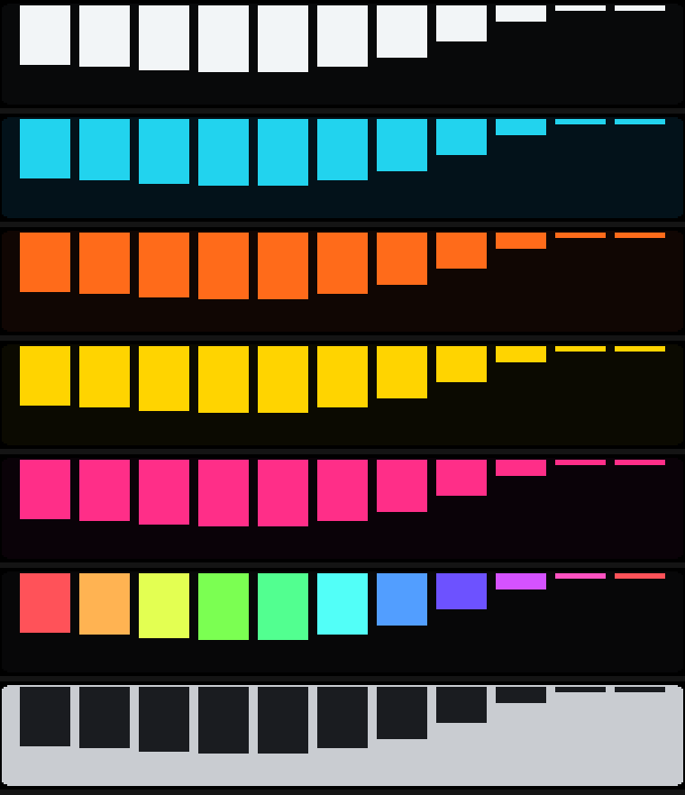
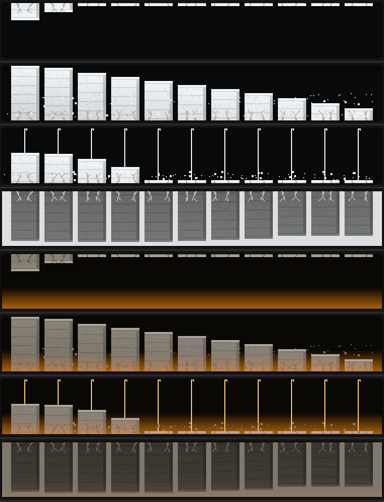
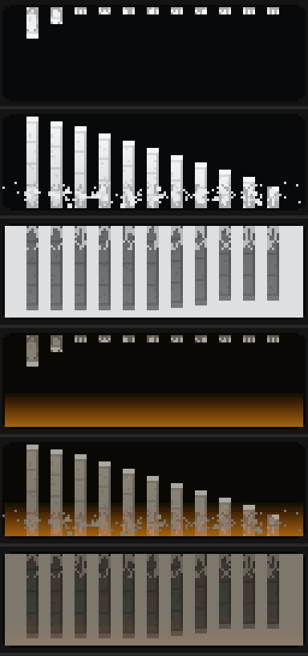
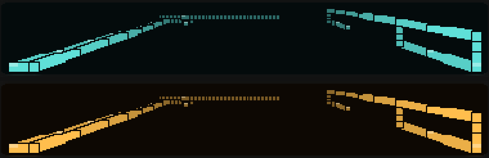
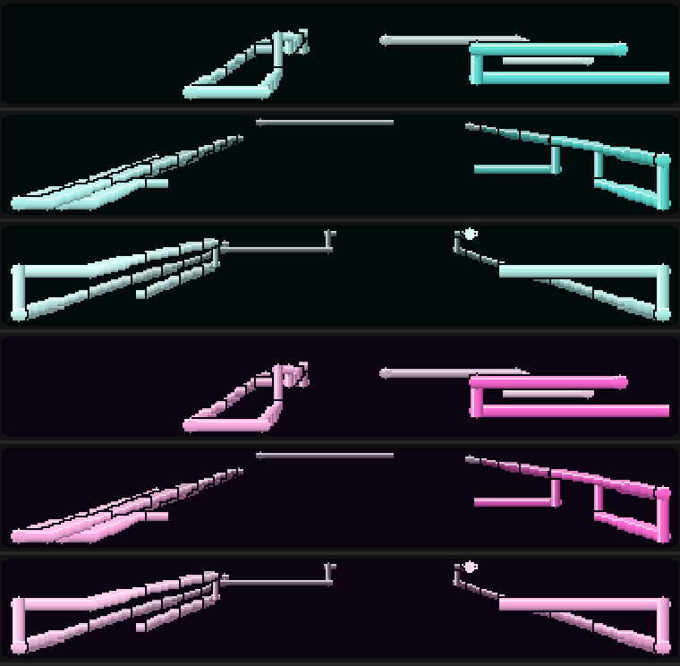
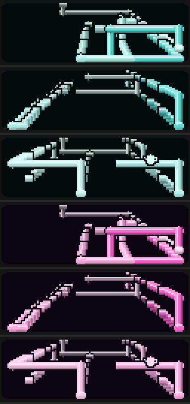
What I want your eyes on: Do they POP now, and do they sit alongside blossom and vaporwave rather than looking like a different app? Brutalist: does the concrete read as a MATERIAL (lit end, shadow side, speckle, board-marks) at taskbar size, or is it too subtle on the white Concrete colourway? Is Sodium the moody one you'd keep, and is the rebar a good peak marker or too spiky when the music drops? Pipes: do they read as round pipes with volume, three at once, and can you make out the teapot at 1:1, or is 9×7 too small to be a joke you can get?
Your note on both: "really lacking in visual fidelity and flair, very basic, not cohesive with blossom or vaporwave". Same ids, colourways and meters; the change is how they are drawn. 3D spectrum now has a stage. There is a perspective floor: 8 grid lines converging on a vanishing point at 30 % height, and 4 cross lines that scroll away at the speed the history rows march back. The floor is washed faintly with the colourway's edge and there is a haze at the horizon, so it reads as the vaporwave floor. Every bar is a real box: a top face with a 1 px hot specular edge along its front, a side face 30 % darker, and a front face that darkens toward the floor. Each box casts a 2 px contact shadow (the floor 40 % darker). Each row back is 25 % further into fog. The camera yaws ±6° over 20 s. When a front bar drops more than 15 % below its peak, the lost height breaks off as a falling ghost block: it falls at 40 px/s, fading in 400 ms, and each drop sheds one block. Orbit is now a system. A sun sits at the centre, radius 4 + 6×bass, with a hot core under a three-step corona that pulses. Each ball is a planet on its own ring, nested outward; the rings are drawn as faint dotted ellipses. Each planet is shaded by the direction to the sun, with a lit crescent on the sunward side. Planets have comet tails whose length is the level: up to 6 dots, and a louder planet also moves faster (0.2 + 1.5×level rad/s). The far half of the plane draws at 60 %, so a planet going behind the sun dims and is hidden by it. A faint star field twinkles behind everything. The flourish is an alignment: every planet eases onto one line from the sun over 400 ms, a white flash line runs through them, and then they scatter back. Both families' bloom only runs for a translucent panel now; on an opaque panel it changed no pixel. That was ~1 ms of the old 3D spectrum's 1.07 ms. 3D spectrum 0.30 ms/frame (0.34 in the surge), Orbit 0.24 ms/frame (0.21 in the alignment) at 380×60.
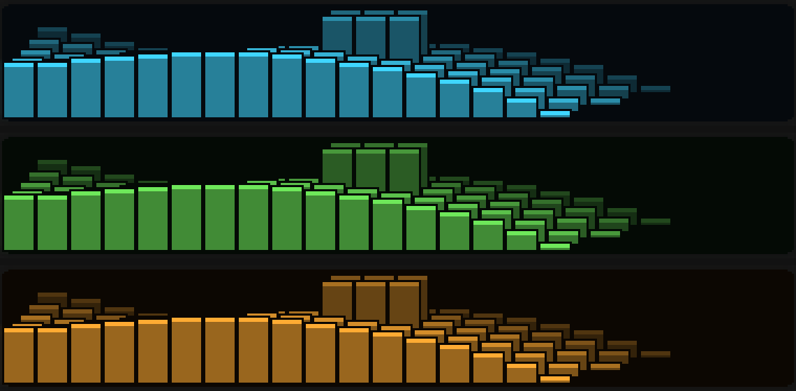
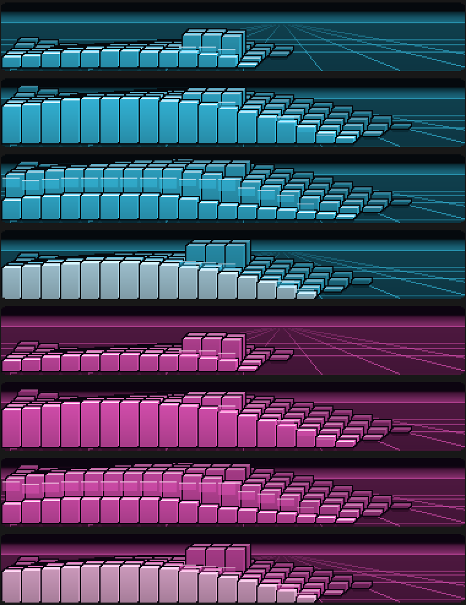
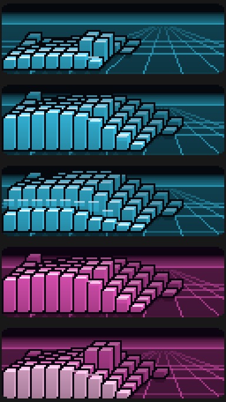
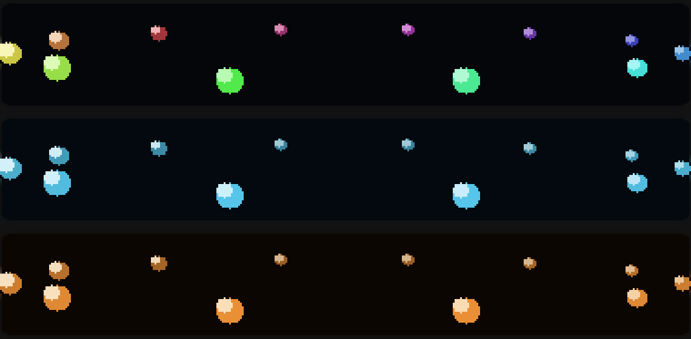
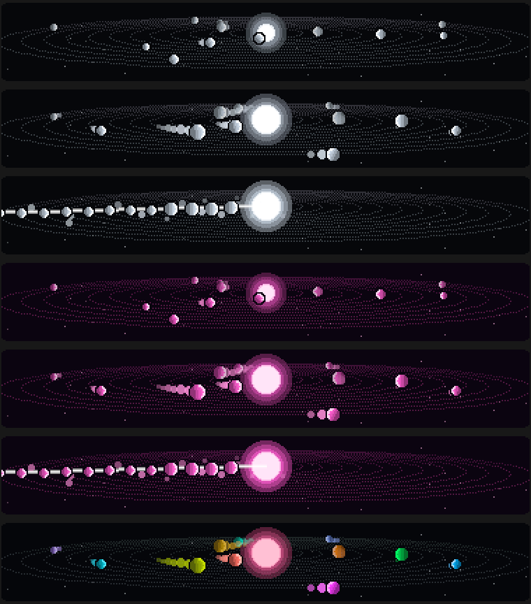
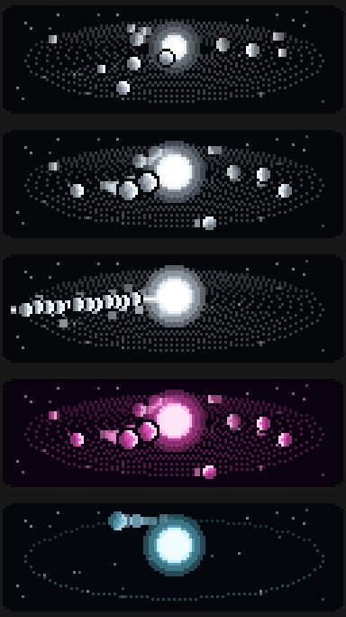
What I want your eyes on: Do they POP now, and do they sit alongside blossom and vaporwave? 3D spectrum: does the floor make it a stage rather than a chart? Can you see the side faces and the specular edge at 1:1, or is the box detail lost at taskbar size? Do the falling ghosts read as pieces breaking off, or as flicker? Is the haze too teal on WMP cyan? Orbit: do the dotted rings read as orbits or as a grey texture where twelve of them bunch at the front? Is the sun too dominant at full bass? Do the comet tails read as tails? Does the alignment read as a deliberate event?
A new family: a Blingee GIF, circa 2007. The meter is rhinestone bars. The 64 bands fold into 24 columns of faceted gems: 5×5 stones on a 6 px pitch, each with a bright centre pixel, a light top-left facet, a darker bottom-right and a 1 px dark outline with the corners cut. On a wide panel each column is two stones across. A column lights bottom-up to its level in lit, with the top stone in hot. A white + glint runs up every lit column once per ~0.8 s, each column out of step, and a hot peak gem hangs above the stack and falls at peak_fall. The levels are read as they arrive, already smoothed by the app, so there is no second attack/decay. Behind the columns about 4 % of the pixels are glitter (8 % at full volume). Each speck twinkles at 2–6 Hz in lit, hot or white, and one in six is a big sparkle that grows a + when it is bright. One glitter phrase sits in the upper third: BLING BLING, ICED OUT, 4 REAL, XOXO, ~*UR MINE*~, $$$, HOTTIE or LUV U 4EVA. It is 2× font3x5 (every glyph pixel a 2×2 block), ringed in edge over a dark outline, and filled with a moving diagonal gradient (lit → hot → a white shimmer) plus white sparkle pixels. It swaps every fourth strong onset. On strong onsets up to three of our own stamps pop in (a sparkle burst, a $, a crown, a heart with a star). Each shows one frame at 60 %, then full size, and fades out over 600 ms. The flourish is a flash on a bass hit: one white frame, then for 500 ms every gem turns diamond white, a chrome sweep crosses left to right, and a spinning 4-point sparkle star turns over the loudest column. No logos. 0.15 ms/frame steady and in the flash at 380×60.
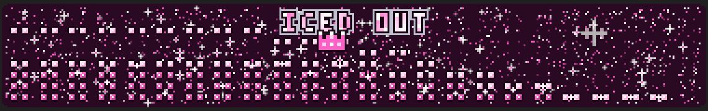
ICED OUT in silver-ringed glitter text, a crown stamp popping under it and a sparkle stamp fading on the right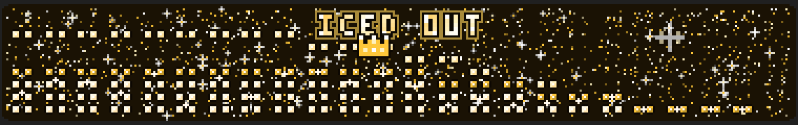
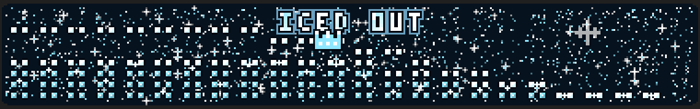
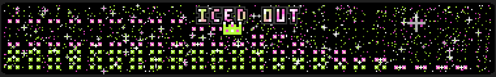
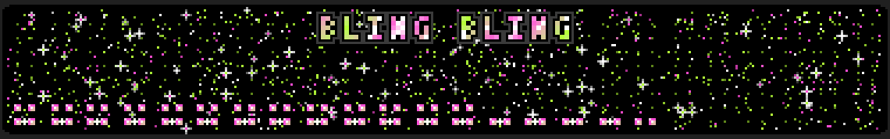
BLING BLING phrase keep the panel sparkling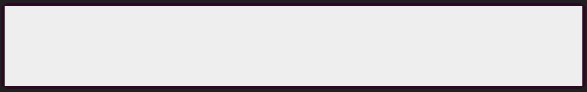
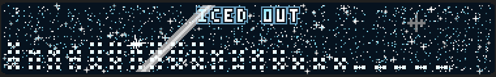
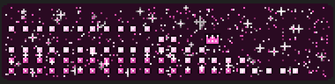
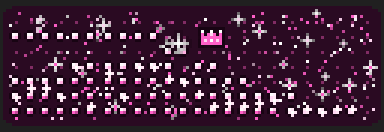
What I want your eyes on: Does it read as a Blingee GIF at a glance, with glitter everywhere, sparkly outlined text and stamps popping? And does it read as a METER, the gem columns clearly rising and falling with the spectrum with the glints running up them? Or does the glitter drown the columns at 1:1? Is the 2× phrase legible at taskbar size, and does the silver-ringed “sticker” outline feel Blingee or too boxy? Are the 14 px stamps big enough to be a joke you get, or should they be bigger? Is Gold’s pale-diamond stone a keeper, or should gold stones be gold? And does the flash read as a deliberate “bling!” moment rather than a glitch? Would a 2007 teenager put it on their MySpace?
A new family: a street-racing in-car dash from the early films and 2 Fast 2 Furious. The panel is carbon fibre: 4×4 cells in a diagonal checker, one shade off the panel, with the strands running across or down in alternate cells. On it sits a backlit dial face in the colourway’s lit, faint at the hub and brighter toward the ring, with dim 0–8 figures under the ring on a tall panel. The meter is the tacho: 48 LED segments on a 150° arc (an ellipse, so it spans the panel), with the bands folded 64 → 48 and the segments spaced evenly along the arc. Each segment is a 2×4 px block that lights when its band passes its threshold. The threshold rises from 0.10 on the left to 0.35 on the right, so the arc is the spectrum left to right, and a loud track winds it up like a tacho. The first 70 % is lit, then amber, then red; unlit segments are dim ghosts of their colour. A 1 px hot needle sweeps from the hub with rms. Across the top are 10 shift lights (green ×3, amber ×3, red ×3, blue) that light with rms, and at the redline all ten flash blue at 8 Hz. On the right is the gear (N, 1–6, boxed) and a 3-digit MPH, both 2× font3x5. Below 200 px wide only the gear shows. On bass hits a neon under-glow in the colourway’s one zone colour rises 8 px from the bottom edge and fades over 250 ms. The flourish is the NOS hit (800 ms, bass-gated). For the first 300 ms the interior is the green-on-black warning screen: black, a 1 px #39ff5a frame, DANGER TO MANIFOLD blinking at 4 Hz, and NOS with a bar gauge draining to empty beneath it. If one line would not leave 24 px either side, the text goes on two lines, DANGER TO / MANIFOLD. Then comes the purge: back to the dash, with 12 white speed lines streaking left at 400 px/s, and the tacho, needle, gear, MPH and shift lights pinned at the redline, all decaying with the envelope. No car logos, badges or wordmarks. The words are our font and the shapes are our own. 0.08 ms/frame steady, 0.06 in the hit, at 380×60.
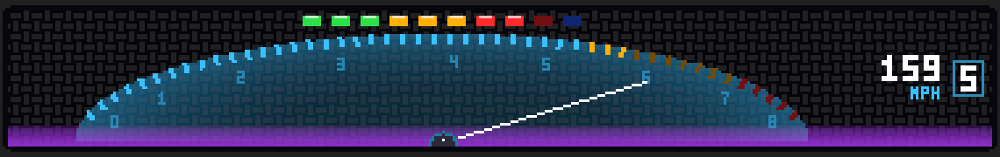
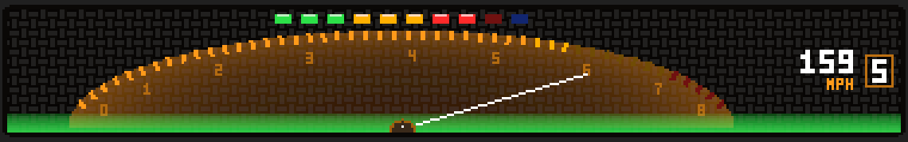
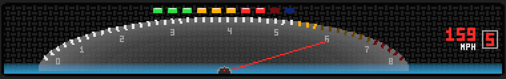
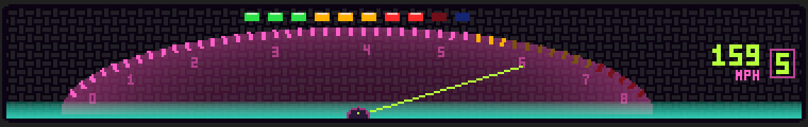
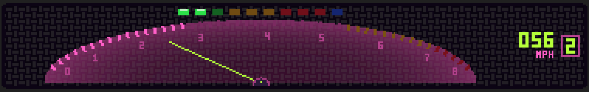
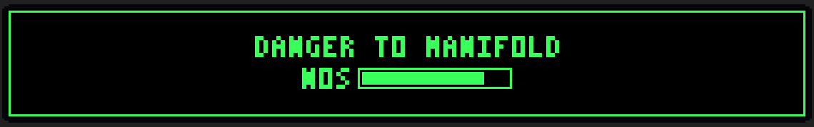
DANGER TO MANIFOLD screen (blink on), NOS and the gauge draining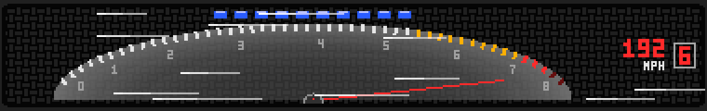
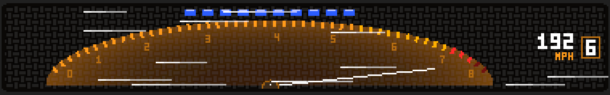
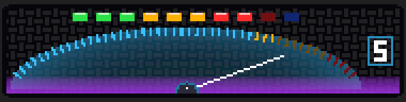
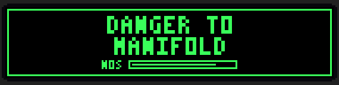
DANGER TO / MANIFOLD, NOS at 1×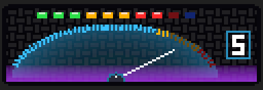
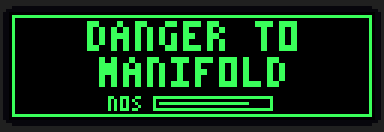
What I want your eyes on: Does it read as a 2 Fast 2 Furious dash at a glance: carbon, a glowing tacho, shift lights, gear and MPH? And does the tacho read as a METER, sweeping with the music rather than just sitting there? Is the backlit dial face a keeper, or too big a dome of colour? It also carries most of the colourway-to-colourway difference. Is the carbon weave visible at 1:1, or just grey noise? Most important: is the warning screen unmistakably DANGER TO MANIFOLD? In font3x5 the N and M differ by one pixel, so it can read as “DAMGER TO MAMIFOLD”. If it does, the fix is a clearer shared N (the PICO-8 form), which would touch every family’s labels. Is the gear N at rest a readable neutral or a blob? Does the purge read as nitrous (the speed lines) or as scratches? Should it be louder, e.g. a white flash as the warning ends?
A new family: Tokyo Drift. The scene is baked once per size: a night sky shading from the panel toward edge with a wash of the neon at the horizon (the city's light pollution), a far row of hazy towers and a near row of black blocks in front, their widths and heights hashed from a constant seed, the near blocks carrying a grid of windows with a scatter lit (a few warm). On the near blocks sit neon signs in the colourway's one zone colour (a quarter in hot): 2 px vertical blades and 2 px rooftop bars with a 1 px halo that brightens on the bass; about a third of them flicker at 1–2 Hz, mostly on with a stutter off. The car is our own 14×6 side profile of a generic coupe (no model, no badge) in lit with a hot tail light, glass that picks up the neon, a 1 px dark outline and a faint headlight cone. Three bitmaps show the drift angle: level, tail swung out (the rear face shows), nose turned in (the front face shows). It slides along the ground line on a slow pendulum between 25 % and 75 % of the width whose swing grows with rms; silence parks it in the centre. The world scrolls past (lane dashes), and the tyre smoke is the meter: a fixed ring of the car's last 64 rear-wheel positions, scrolled with the world and rising as it ages, puff k = band k from the car backwards, each a disc of radius 1 + level × 7 in white at the colourway's ghost alpha with a 2-step rim. On a bass-heavy passage the smoke billows at the car and thins to a wisp at the tail; on treble it is the other way round. Top right, a radius-8 steering gauge with a needle at the drift angle and ANGLE NN; dropped under 200 px wide. The flourish is the drift (900 ms, bass-gated): the car whips across the full width (out past the right edge, back in from the left to its pendulum spot) pinned at full angle, the smoke goes to maximum radius tinted hot, so the sweep lays a wall of it across the panel, the neon flashes at 12 Hz, and DRIFT! (2× font3x5, hot, 1 px dark outline) slams in for 400 ms: one frame at 3×, then 2× with a 1 px shake. No Japanese glyphs. 0.20 ms/frame steady, 0.56–0.62 in the drift, at 380×60.
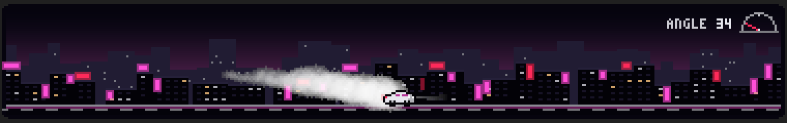
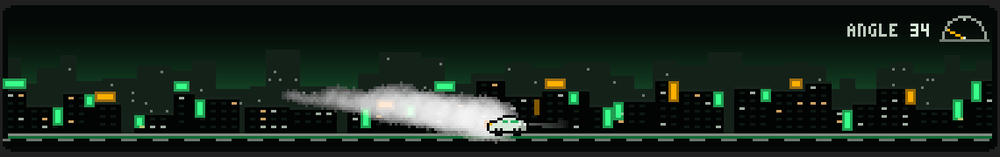
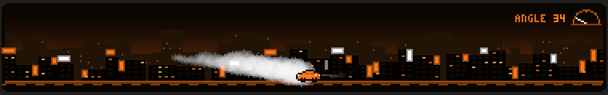
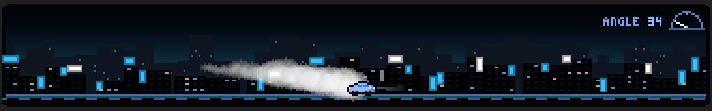
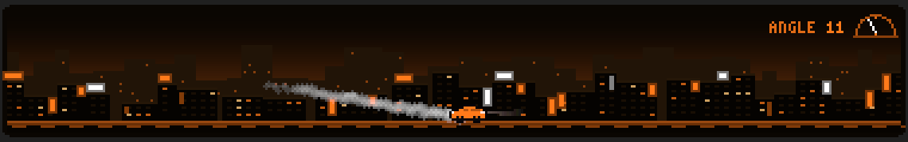
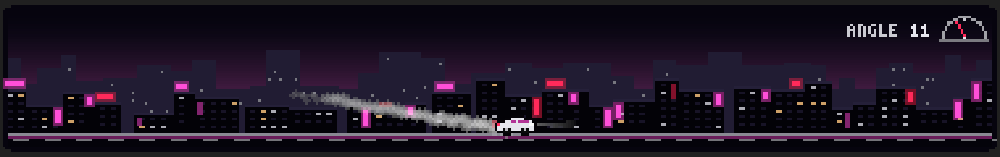
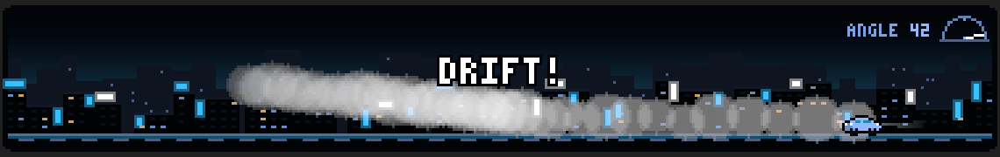
DRIFT! up, the signs flashing white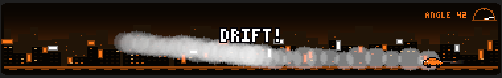
hot is white, so the smoke stays white)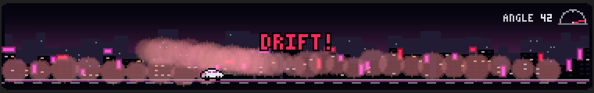
hot-tinted smoke behind it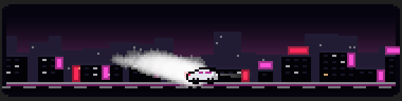
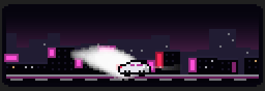
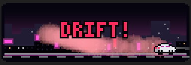
DRIFT! fits at 2×What I want your eyes on: Does it read as Tokyo at night at a glance: a skyline, lit windows, neon? Is the car recognisably a car at 1:1? It is only 14×6, so the three drift bitmaps (tail out / level / nose in) may just read as a wobble; if so, a 2-frame body roll or a longer 18×6 car would sell it better. Does the smoke read as a METER, visibly billowing with the bass, or just as smoke? The pendulum parks the car centre on silence and swings up to 25–75 % on loud tracks; is that too slow (9 s a swing) or too busy? The trail's length follows the car's motion (short while it swings back left, long going right): acceptable drift physics, or should the trail spacing be fixed? Is the white smoke too close to Shibuya's white car? The spec's “pink and cyan” note for Shibuya is not realised: each colourway has one neon (pink) plus hot (red) for some signs. Should Shibuya get a real cyan second neon (a second zone)? And does the drift land as a deliberate “DRIFT!” moment rather than a glitch?
A new family, built from your image: a soft, luminous spectral arc over a dark rim-lit horizon on a plum-to-black sky. The backdrop is baked once per size: a vertical gradient from panel to near-black, two faint translucent sheets in edge (alpha 0.12, a brighter ridge near their rim) sweeping through the top corners, and the horizon, a wide ellipse with its apex at ~70 % height a touch left of centre, dipping to ~90 % at the edges, filled near-black with an anti-aliased edge. The arc is the meter: a concentric ellipse above, position = frequency (64 samples, bass at the left), each x column interpolating between its two neighbouring samples so the band is one continuous shape. Its hue runs through the colourway’s spectral stops mixed in linear light; its core is 2 + level × 10 px thick at 0.35 + 0.65 × level brightness, glowing through three layered alpha columns (a 4 px halo at 0.15, a 2 px halo at 0.4, the core) with sub-pixel ends so the curve has no stair-steps, plus a hot heart (the middle of the core lifted toward white with the level). No bloom. The horizon stands in front of the light. A 1 px rim-light in hot runs along the horizon edge, its alpha following the glow directly above it, with a faint ghost sheen under it. The arc breathes ±2 px over 8 s and its hues drift up to ±4 % with rms. The flourish is the flare (700 ms, bass-gated): the core whitens outward from the loudest point (a travelling highlight with a soft front), the rim-light flares full width, and a soft lens flare (three anti-aliased discs at 0.2/0.1/0.05 in hot) blooms at the apex. ~0.46 ms/frame steady, ~0.50 in the flare, at 380×60.
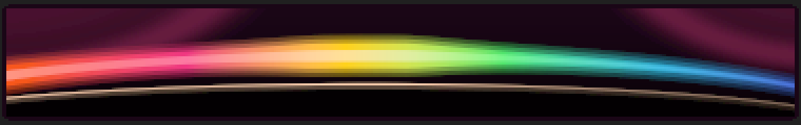
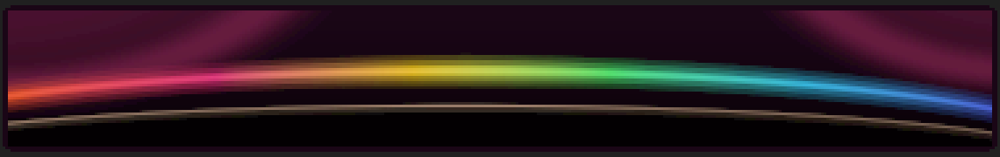
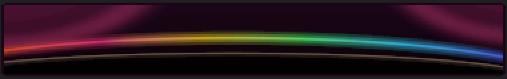
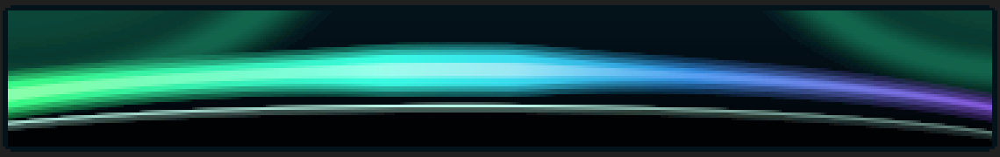
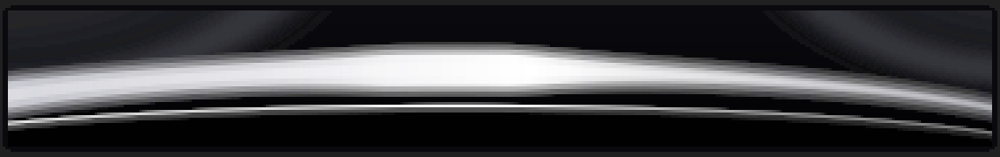
What I want your eyes on: Most important: does Sunset match your image? It is my reading of a description of it — a glowing rainbow arc over a dark curved horizon with a warm rim, plum sky, pink corner sheets — and I could not see the original. If the colour order, the arc’s height or curvature, the horizon’s size or the sheets are off, say which and it is a constants change. Does the band read as light (soft, glowing) rather than a painted stripe? The halo is the spec’s 2 px and 4 px; a wider, fainter outer glow would make it bloomier at the cost of the dark gap above the horizon. And does it read as a meter: visibly fatter where the music is (the bass at the left, the mid bump), thin where quiet? At calm levels the swell is subtle. Is the lens flare a keeper, or a grey smudge over the plum? Is the rim-light too bright at silence?